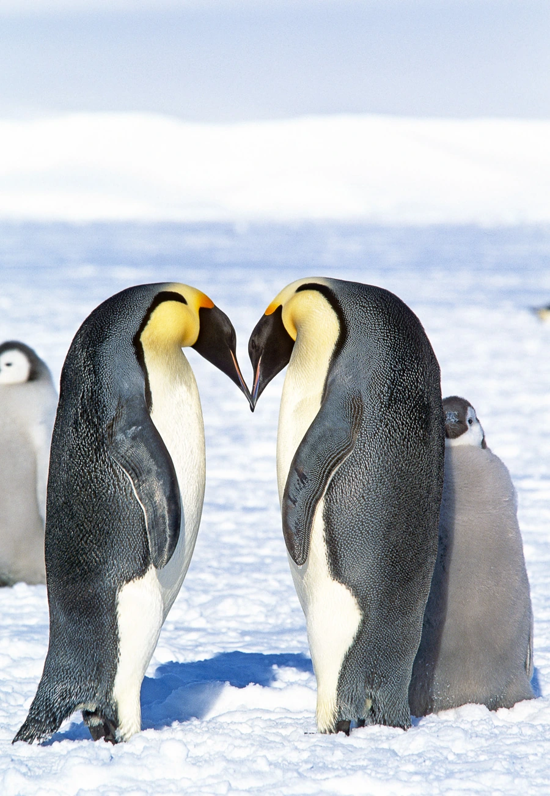

鸟类 · 动物界
帝企鹅 Aptenodytes forsteri

体型最大的企鹅，也是唯一在南极冬季繁殖的企鹅，雄鸟把蛋放在脚背上孵化，靠抱团取暖和禁食坚持两个多月。
- 分类
- 门脊索动物门纲鸟纲目企鹅目科企鹅科属王企鹅属
- 栖息环境
- 南极大陆边缘和近海固冰区，繁殖群集中在稳定而避风的海冰上
- 地理分布
- 南极大陆及周边海冰，约有 60 个繁殖群，全部位于南纬 66° 以南
- 保护级别
- IUCN 近危（NT）；南极物种，中国无分布
物种志
帝企鹅体长 100–130 cm，体重 22–45 kg，繁殖期体重会大幅起落。背部、头部和翅膀为黑色，腹部白色，颈部两侧和后颈有由金黄到橙黄的渐变斑块，喙细长而略向下弯。它的翅膀已特化成僵硬的鳍状肢，腿短而靠后，在冰面上直立行走或滑行。
帝企鹅分布在南极大陆边缘和近海海冰，是唯一在南极冬季繁殖的企鹅。每年 4–5 月求偶，5–6 月雌鸟产下 1 枚卵后交给雄鸟，自己下海觅食约 65 天；雄鸟把蛋放在脚背上，用腹部育儿袋保温 62–66 天，在零下 40℃ 的风雪中靠脂肪坚持，常常连续禁食 100 天以上。雏鸟出壳后由双亲轮流喂养，10–12 月换羽后独立下海。帝企鹅主要吃鱼、磷虾和乌贼，潜水可超过 500 m、闭气 20 分钟以上。
形态与习性
- 食性鱼、磷虾和乌贼，潜水捕食
- 体长100–130 cm
- 体重22–45 kg，随繁殖期大幅增减
- 潜水可潜至 500 m 以上，单次闭气约 20 分钟
- 繁殖每窝 1 枚卵，雄鸟孵化 62–66 天
- 禁食繁殖期雄鸟可连续禁食 100 天以上
- 寿命野外约 20 年
趣味知识
- 帝企鹅是唯一在南极冬季繁殖的企鹅，孵蛋期正逢最冷、最黑暗的季节。
- 成百上千只帝企鹅挤成“企鹅堆”轮流换位取暖，中心温度可达 35℃。
- 雌鸟产卵后体重会明显减轻，交配季雌雄双方都要经历长时间禁食。
- 帝企鹅的潜水纪录曾达 564 m，单次闭气超过 20 分钟。